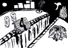
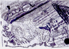
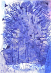
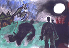
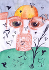
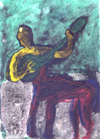

Plaza ~102 Kb; tinta china negra. Un hombre está sentado en un banco de plaza al borde del Abismo. Impera la soledad. Unas figuras embrionarias lo acechan. ¿Es el futuro? ¿Qué misterio encierra esa planta de hojas gigantes? |
Lluvia ~139 Kb; tinta china negra. Es en realidad abstracto. Se pueden descubrir muchos patrones. Para mí es una tormenta, pero la interpretación es libre... |
Castillo azul ~248 Kb; acuarela y birome. De castillo no tiene nada, pero es obvio que es un castillo. En la parte inferior, hay formitas en forma de neuronas. ¿Qué son esas figuras triangulares como pájaros a las que recurro en casi todos los dibujos? |
Mantis luna ~124 Kb; tintas, colorante. Quiere ser grotesco, violento. Un poco como Magritte en "El Asesino Amenazado". Post delineata: mhh, parezco querer decir algo sobre las mujeres. Después del apareamiento, la mantis hembra se come al macho. La luna también es un símbolo femenino. Los ciclos lunar y menstrual de aproximadamente veintiocho días, la sangre... Qué habré querido decir es algo que ni siquiera yo sé. Y hay otro detalle sobre este dibujo que no voy a comentar. |
Ojos ~124 Kb; sanguina y tintas. Es una recreación de un viejo dibujo; los ojos impersonales mirando desde atrás de un aljibe. Y, de yapa, más pajaritos. |
Centauro guitarrista ~156 Kb; crayón derretido :) y tinta. Hace poco me obsesioné dibujando centauros juglares, lautistas, guitarristas, trovadores, ministriles. Son lindos los centauros. |
{kind=link}
{kind=link}
{kind=link}
{kind=link}
{kind=link}
{kind=link}